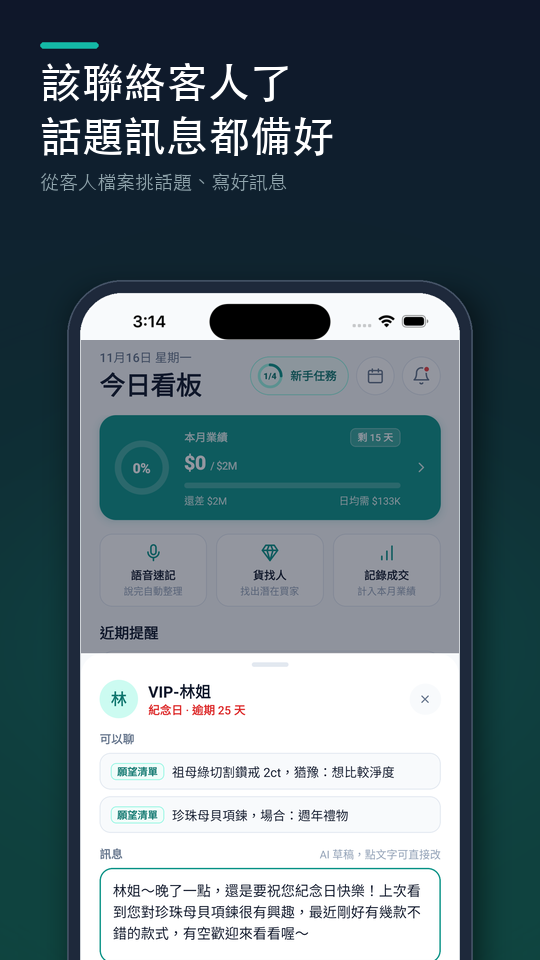

關心教學：提醒跳出來，AI 幫你想好聊什麼、寫好一則訊息
情境：林姐的結婚紀念日到了，提醒跳出來，你知道該傳個訊息，但一時想不起上次聊了什麼，又怕寫得太像罐頭祝福。
點提醒旁的「關心」，熟客簿會從林姐的檔案找出可以聊的事，例如她在考慮的祖母綠戒、想送的週年禮物，再寫好一則像你平常說話的短訊息。看一眼、改兩個字就能傳。

操作步驟
從提醒點「關心」
在看板的 近期提醒 或 提醒 頁，每筆提醒右邊都有 關心。不用選情境：生日提醒就是生日、保養到期就是保養，AI 會照提醒的原因寫。
看「可以聊」的話題
面板上方的 可以聊 會列出 1～3 個這位客人才有的話題，並標出來源，例如 願望清單、互動紀錄、購買紀錄。就算不用 AI 的訊息，看完也知道要聊什麼。
改訊息
下方是一則短訊息，點文字就能直接改。想調整語氣可以按 更短、更親切、更正式 或 換個說法；改壞了按 回上一版。
送出
按 複製並開 LINE，訊息會複製好並打開 LINE，選好聊天對象貼上就能傳；或按 分享 用 WhatsApp、WeChat 等其他通訊軟體。
提醒自動完成
送出後，這筆提醒會自動勾完成，客人的互動歷史也會記一筆。每年重複的提醒（生日、紀念日）會排好下一次；按錯了可以按 復原。
小技巧
- 已經自己聯絡過了？按面板最下面的 我自己聯絡過了，標記完成，一樣會勾完成提醒。
- 客人檔案記得越多（語音速記、願望清單、購買紀錄），AI 挑的話題就越貼切。
- 生日或紀念日已經過了，AI 會自動補一句遲來的祝福，不會寫得像今天。
常見問題
- AI 會自己幫我傳訊息嗎？
- 不會。訊息由你確認、修改後自己送出，熟客簿只幫你準備好話題和草稿。
- AI 會不會亂寫客人沒有的事？
- AI 只會用客人檔案裡的資料，不會編造商品、折扣或活動。送出前請看一下，有不對的地方直接改。
- 「關心」會用掉 AI 次數嗎？
- 會，打開一次和每按一次微調（更短、更親切…）各算一次，另外計算、不佔語音速記的額度。
- 沒有用 LINE 的客人怎麼傳？
- 按 分享，可以選 WhatsApp、WeChat、簡訊等手機上的任何 App。
想直接試試看？
熟客簿是給第一線銷售顧問用的客戶管理 App：講 30 秒記好客人、生日回訪自動提醒、新貨到了幫你找出該通知誰。免費試用 14 天，不用綁信用卡。